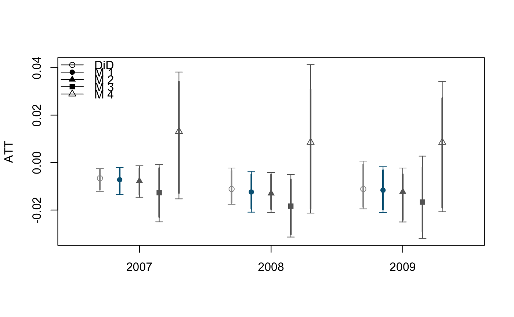
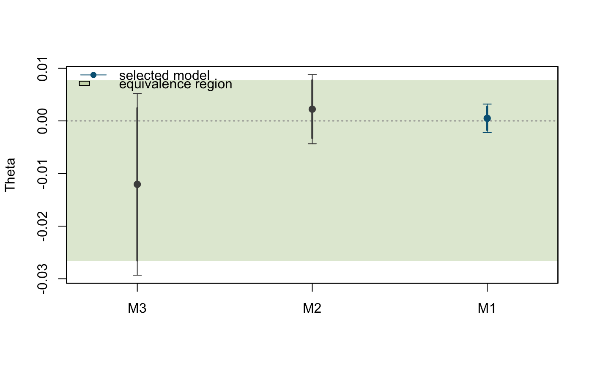

Estimate average treatment effect on the treated using double difference-in-difference estimator.
did(formula, data, id_subject = NULL, id_time, post_treatment, method = "parametric", se_boot = FALSE, n_boot = 1000, boot_min = TRUE, select = "parametric")
| formula | A formula. |
|---|---|
| data | Data matrix. Either a |
| id_subject | subject id. This argument should be left as |
| id_time | time id. |
| post_treatment | time index for post treatment periods. |
| method | Either |
| se_boot | If |
| n_boot | Number of bootstrap iterations. |
| boot_min | If |
| select | Selection criteria. |
A diddesign class object, which is a list of results for each post treatment period.
A result for one period contains:
results_estimates:
results_bootstraps: bootstrap estimates.
BIC: BIC for all models .
HQIC: HQIC for all models.
BIC_min: BIC for the selected model.
This is the smallest BIC among values reported in BIC.
HQIC_min: HQIC for the selected model.
This is the smallest HQIC among values reported in HQIC.
min_model: Selected model.
select: A criteria used to select the model.
ATT: Estimated average treatment effect on the treated.
ci95: 95% confidence intervals.
ci90: 90% confidence intervals.
# load package require(DIDdesign) # load data data(anzia2012) # nonparametric estimator without covariates fit1 <- did( formula = lnavgsalary_cpi ~ oncycle, data = anzia2012, id_subject = "district", id_time = "year", post_treatment = c(2007, 2008, 2009), method = "nonparametric", se_boot = FALSE )#> #> ... estimating treatment effect for 2007 ... #> ... computing asymptotic variance ... #> ... computing the standard DiD estimate ... #> #> ... estimating treatment effect for 2008 ... #> ... computing asymptotic variance ... #> ... computing the standard DiD estimate ... #> #> ... estimating treatment effect for 2009 ... #> ... computing asymptotic variance ... #> ... computing the standard DiD estimate ...#> #> Method: #> nonparametric #> #> #> Call: #> lnavgsalary_cpi ~ oncycle #> #> #> Main: #> ATT 95% Conf. Int. Selected #> 2007 -0.007 [-0.013, -0.001] M1 #> 2008 -0.012 [-0.021, -0.004] M1 #> 2009 -0.012 [-0.022, -0.001] M1 #> #> #> #> Results: #> #> T = 2007 #> #> ATT 95% Conf. Int. #> DiD -0.007 [-0.012, -0.001] #> M1 -0.007 [-0.013, -0.001] ✔ #> M2 -0.008 [-0.014, -0.001] #> M3 -0.013 [-0.029, 0.003] #> M4 0.013 [-0.027, 0.053] #> #> T = 2008 #> #> ATT 95% Conf. Int. #> DiD -0.011 [-0.019, -0.003] #> M1 -0.012 [-0.021, -0.004] ✔ #> M2 -0.013 [-0.022, -0.004] #> M3 -0.018 [-0.036, -0.000] #> M4 0.009 [-0.034, 0.051] #> #> T = 2009 #> #> ATT 95% Conf. Int. #> DiD -0.011 [-0.022, 0] #> M1 -0.012 [-0.022, -0.001] ✔ #> M2 -0.012 [-0.023, -0.001] #> M3 -0.017 [-0.033, 0.000] #> M4 0.009 [-0.031, 0.048] #> #> #> Selection: #> #> M1 is selected #> #> Theta Std. Error #> M2 -0.012047 0.00881 #> M3 0.002234 0.00336 #> M4 0.000498 0.00138 #>#>